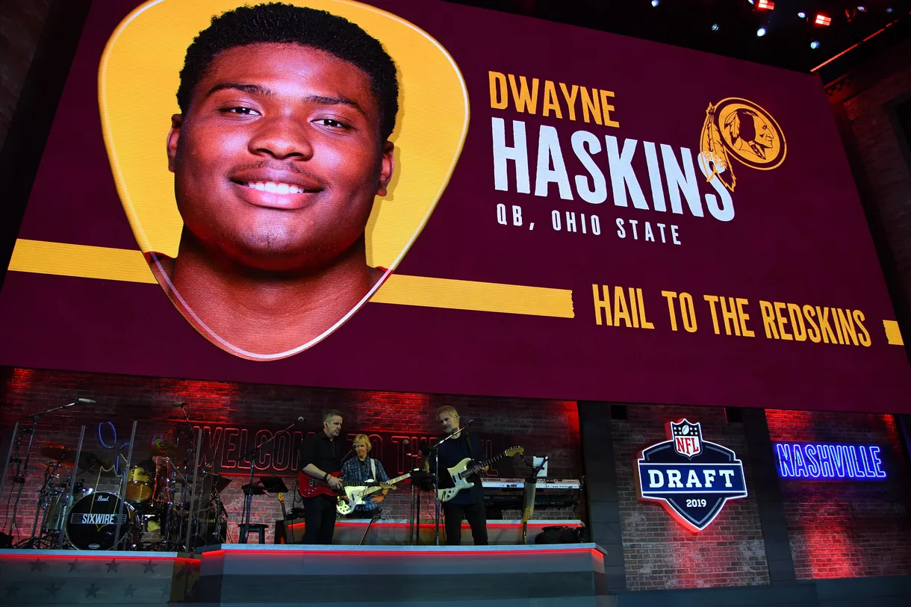
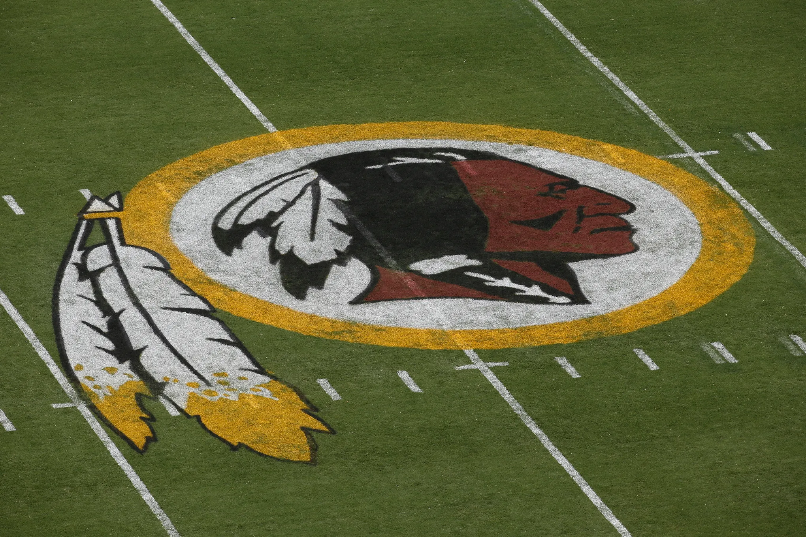
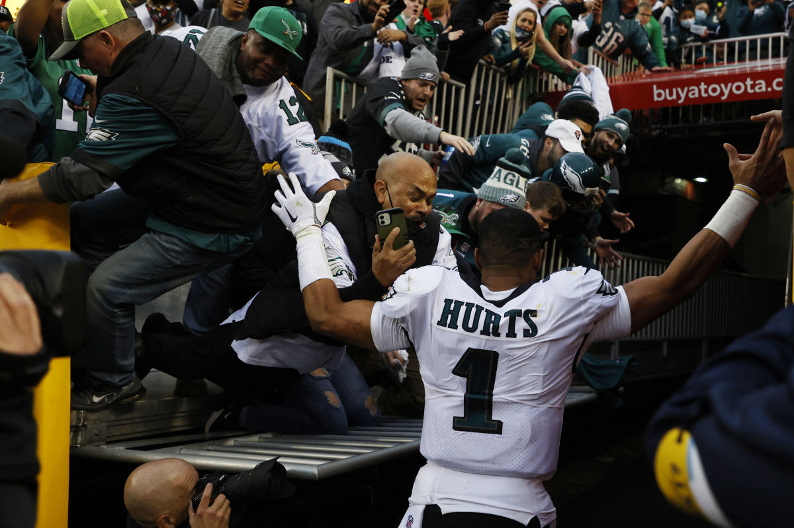
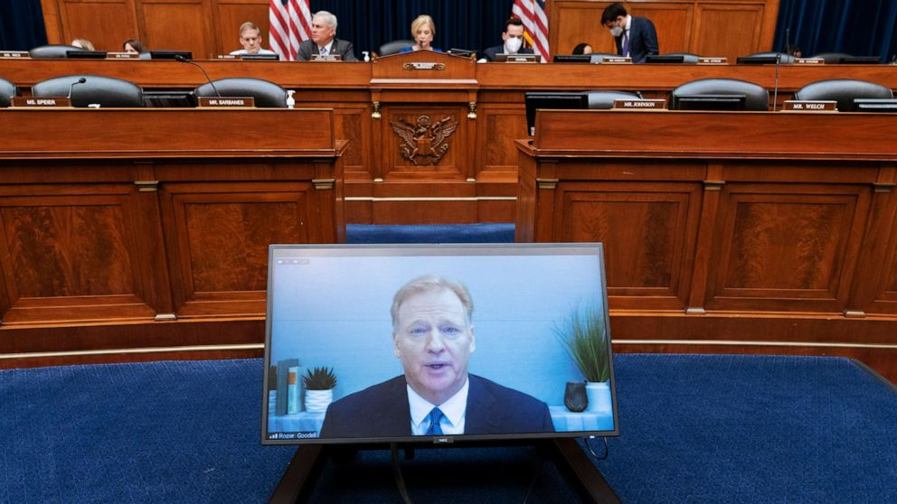
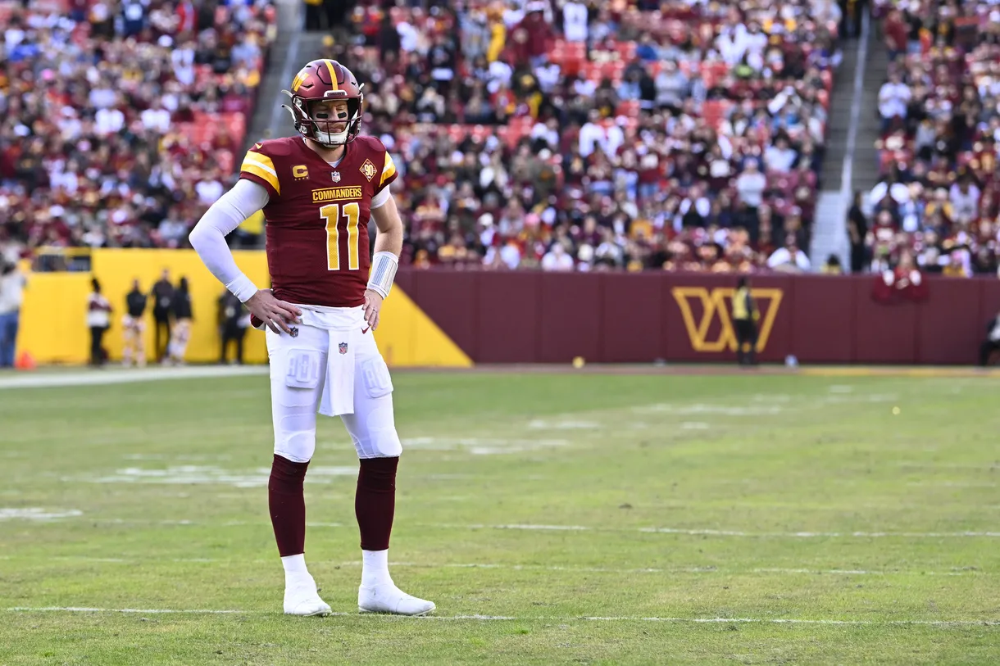
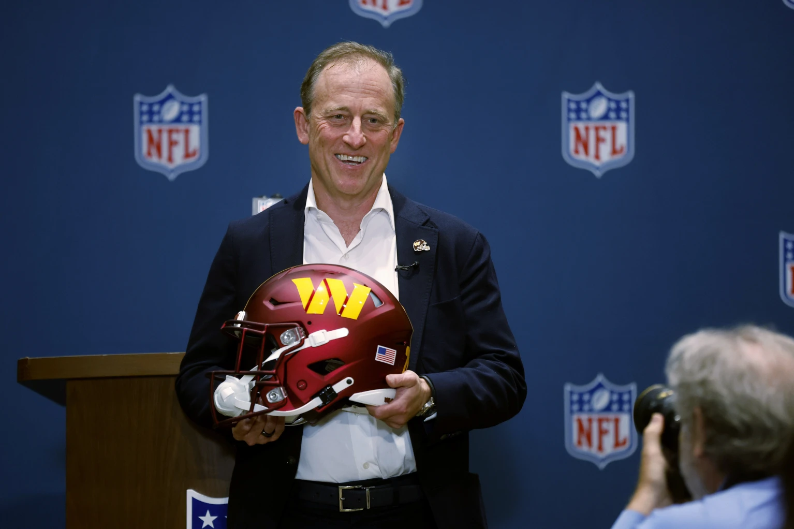

2019: Big roster, coaching, and front office moves
April 25, 2019
According to multiple people in Washington's draft room, the team selected Ohio State quarterback Dwayne Haskins with the 15th pick in the draft per Snyder's request. Kyle Smith, the team's director of college scouting, did not want to draft him, but both Haskins and Snyder's son attended Bullis High School in Potomac, Maryland , leading to Snyder's urging.

Dwayne Haskins graphic on-stage in Nashville during 2019 NFL Draft. Christopher Hanewinckel/USA TODAY Sports
October 7, 2019
Snyder fires Head Coach Jay Gruden after starting 0-5. Gruden had been the team's head coach since 2014, won the NFC East in 2015, and finished with a 35-49-1 record. Bill Callahan replaced him as the interim coach, and Washington would finish 3-13.
December 30, 2019
Snyder fired team President Bruce Allen, ending his 10-year run with the organization. Allen is best known among Washington fans for saying, "The culture is pretty damn good", when it obvioudly wasn't. The team went 62-97-1 during Allen's tenure.
 Snyder and Allen on the sidelines prior to a game at FedEx Field. Jonathan Newton/The Washington Post via Getty Images
Snyder and Allen on the sidelines prior to a game at FedEx Field. Jonathan Newton/The Washington Post via Getty Images
2020: Goodbye Redskins and Hello Allegations
January 1, 2020
Snyder hires Ron Rivera to become the next head coach, and gives him more power than any coach who has worked under him.
July 13, 2020
Under pressure from its sponsors (Notably FedEx and Pepsi), Washington announces it will drop the Redskins nickname it had used for 87 seasons. This news surprised many ecause in 2013, Snyder said, "We never change the name." Snyder continued to stand on that hill depsite all of the controversy surrounding the name, but ultimately caved with the sponsors pressure.

The Redskins logo painted on FedEx Field. Associated Press
July 16, 2020
The Washington Post released a detailed report regarding Washington's toxic culture. Fifteen women allege they were sexually harassed and verbally abused by former team employees, but none of which accused Snyder. Although, he is cited for setting up a toxic culture. Later that same day, Washington hires Beth Wilkinson to review the team's culture, policies and allegations of workplace misconduct.
August 26, 2020
Another Washington Post report is released about Washington's toxic culture. This report includes 25 more women alleging sexual harassment. It was reported that former radio play-by-play broadcaster, Larry Michael, requested that his staff produce a lewd video for Snyder from a 2008 cheerleader calendar photo shoot. Both Snyder and Michael deny the charges. A former team employee said that another video was made in 2010.
August 31, 2020
Snyder announces that the NFL has taken over the investigation into Washington previously run by Wilkinson. Wilkinson and her team still conducted the investigation, but reported to NFL Commissioner Roger Goodell and the NFL. "The entire Washington Football Team remains committed to fully cooperating with all aspects of the investigation," Snyder says.
November 13, 2020
Washington's three minority owners -- Fred Smith, Dwight Schar and Robert Rothman -- sue Snyder, saying he interfered with a pending sale of their shares to investors. They contend Snyder improperly used his right of first refusal by offering to buy the shares of Smith and Rothman, but not Schar. Snyder had accused Schar of leading an effort to extort him. The NFL later bans Schar from being part of an ownership group again.
December 22, 2020
Another Washington Post report states Snyder paid a former team employee $1.6 million in 2009 as part of a settlement after she accused him of sexual misconduct while flying on his plane. Snyder denies the allegations.
December 28, 2020
Washington releases Haskins just 20 months after drafting him. The release occurs after multiple breaches of COVID-19 protocols, including being maskless at his girlfriend's birthday party with strippers, just a few hours after a loss to the Seattle Seahawks.
2021: More investigation
January 3, 2021
A postive! Washington beats the Philadelphia Eagles, 20-14, in the regular-season finale to win the NFC East with a 7-9 record. Despite finishing the regualr season with a losing record, it was Washington's first playoff appearance since 2015. Washington would lose to the Tampa Bay Buccaneers in the wild-card round, 31-23.
March 31, 2021
NFL owners unanimously approve Snyder to buy out his minority partners for the remaining 40.5% control of the franchise. This ties back to November 2020, when Snyder rejected an offer of $900 million by a group of investors wanting to buy out the minority partners.
July 1, 2021
Wilkinson's investigation concludes, and the NFL fines Washington $10 million for a toxic workplace culture under Snyder. There was no written report released. The league announces that Snyder's wife, Tanya, will take over the will the day-to-day duties while he focuses on trying to get a new stadium built. Dan Snyder says in a statement, "It is now clear that the culture was not what it should be, but I did not realize the extent of the problems, or my role in allowing that culture to develop and continue. I know that as the owner, I am ultimately responsible for the workplace."
October 1, 2021
More problems arise with the culture. The Drug Enforcement Agency raids the office and home of Commanders head athletic trainer Ryan Vermillion, who was them placed on administrative leave. The DEA started an investigation centered on the distribution of prescription drugs. Assistant trainer Doug Quon was also placed on leave.
October 8, 2021
The Wall Street Journal released leaked emails that highlight exchanges between Las Vegas Raiders coach Jon Gruden, who was working for ESPN at the time the emails were written, and Allen. Gruden's emails were uncovered as part of Wilkinson's investigation. In 2022, former House Oversight Committee chairman Tom Davis writes in a letter to the current chairwoman Carolyn B. Maloney that Snyder used the emails to blame Allen for the toxic culture. The leak forced Gruden to resign as coach of the Raiders.
October 21, 2021
The chairwoman of the House Oversight and Reform Committee, Rep. Carolyn B. Maloney (D-N.Y.), announces an investigation into the Washington franchise as well as the NFL's handling of its investigation into the team. Both Maloney and Rep. Raja Krishnamoorthi (D-Ill.), chairman of the Subcommittee on Economic and Consumer Policy, sign a letter sent to Goodell.
2022: The rebrand and the start of the Mary Jo White investigation
January 2, 2022
A railing above the visiting tunnel at FedEx Field collapses as Eagles quarterback Jalen Hurts exits the field and heads to the locker room. Multiple fans fall to the ground. Washington released a statement suggesting the fans were offered on-site medical evaluations, but four fans refute that statement. In September, they file a lawsuit against the Commanders seeking $75,000 apiece in damages.

Eagles fans falling onto Jalen Hurts after a railing collapsed at FedEx Field. Geoff Burke/Reuters
February 2, 2022
Time for the rebrand. Washington announces its new name -- the Commanders -- after two years of being called the Washington Football Team. The franchise unveils the uniforms and logo. Snyder said: "Today's a big day for our team, our fans, a day in which we embark on a new chapter. It's been a long journey to get to this point."
 Dan Snyder and his wife, Tanya, posing next to the new Washington Commanders uniforms. AP Photo/Patrick Semansky
Dan Snyder and his wife, Tanya, posing next to the new Washington Commanders uniforms. AP Photo/Patrick Semansky
February 3, 2022
Just one day after the team rebrand, in a roundtable session with members of the House Committee for Oversight and Reform, former Washington cheerleader and marketing manager Tiffani Johnston alleges Snyder placed his hand on her leg while at a dinner function and later unsuccessfully tried to force her into his limousine.
Februrary 18, 2022
The NFL hires Mary Jo White, a former U.S. attorney for the Southern District of New York and former chair of the Securities and Exchange Commission, to investigate Johnston's claims against Snyder. A week earlier, the team announces it will conduct an investigation, but the NFL later says it will run the probe.
March 9, 2022
Washington trades two third-round picks to the Colts for Carson Wentz. The teams also swap second-round picks. The Commanders pick up Wentz's $28 million contract for 2022. According to multiple team sources, Snyder pushed for the front office to finalize the move.
April 4, 2022
The Commanders release a statement strongly denying former Washington employee Jason Friedman's testimony before the House Oversight Committee alleging financial improprieties -- including Washington withholding ticket revenue that was supposed to be shared with other teams.
April 12, 2022
The House Oversight Committee sends a 20-page letter to the Federal Trade Commission regarding a "potentially unlawful pattern of financial conduct" by the franchise.
April 18, 2022
The Commanders send a 25-page letter to the FTC, strongly denying Friedman's charges, saying he did not have access to the financial information he was alleging. They also release emails and other correspondence to back up their rebuttal.
June 1, 2022
The House Oversight Committee asks Snyder and Goodell to testify at a hearing on June 22. In a statement, Maloney says, "We must have transparency and accountability, which is why we are calling on Mr. Goodell and Mr. Snyder to answer the questions they have dodged for the last seven months."
June 15, 2022
Snyder informs Congress he will not appear at the hearing, citing a long-standing commitment to attend an awards ceremony in France. Meanwhile, Goodell says he will testify. Two days later, Maloney urges Snyder to reconsider and offers him a chance to do so remotely. Three days after Maloney's encouragement, Snyder again declines. His attorney says they want the committee to share documents it intends to use during questioning.
June 22, 2022
The House oversight committee releases a 29-page report, detailing new allegations against Snyder. The report concludes Snyder conducted a "shadow investigation" to try to discredit media and others who they thought played a role in making accusations against him and the organization. Among the report's findings: Snyder sent private investigators to the homes of those who accused him to offer them "hush money," and Bruce Allen created the toxic workplace. Several hours after that report is released, Goodell testifies before the House oversight committee for 2½ hours, reiterating they won't release the Wilkinson report to protect the anonymity of those who participated. Later, Maloney says they will issue a subpoena to get Snyder to testify.

NFL Commissioner Roger Goodell testifies virtually during a House Oversight Committee hearing on the Washington Commanders' workplace conduct. Jacquelyn Martin/AP
July 28, 2022
Snyder testifies voluntarily for approximately 10½ hours via video conference from Israel, where he's commemorating the one-year anniversary of his mother's death. The committee warns beforehand if he did not fully answer questions, they will issue a subpoena upon his return to the United States. A spokesperson for Snyder said he answered all of their questions about workplace misconduct.
October 13, 2022
An ESPN report reveals Snyder told people in his inner circle Goodell and other owners can't "f--- with me" because of information he has on all of them. The report says Snyder has accumulated information on six other owners, including the Cowboys' Jerry Jones, with whom he had been close, as well as Goodell. The report says many owners and top league executives would like to see Snyder removed. But to do that, 24 of the other 31 owners would have to vote in favor of ousting him. However, no vote is taken at the league meetings the following week.
October 18, 2022
Colts owner Jim Irsay tells reporters at the owners' meetings:
"I believe there's merit to remove [Snyder] as owner. Unfortunately, I believe that's the road we probably need to go down and we just need to finish the investigation, but it's gravely concerning to me the things that have occurred there over the last 20 years."Jim Irsay, Colts owner
Washington releases a statement from the Snyders saying they will not sell. Snyder then sends a letter to the other owners calling the ESPN report false and denying he hired a private investigator "to look into any owner or the Commissioner."
November 2, 2022
The Snyders announce they've hired Bank of America Securities to consider "potential transactions" for selling the team. Their statement did not specify whether they will sell all of the team or just a portion. A spokesperson says the Snyders are "exploring all options." Forbes values the team at $5.6 billion.
December 8, 2022
The House Oversight Committee releases a 79-page report on its investigation, stating Snyder "permitted and participated in" creating a toxic workplace culture. They called Snyder's testimony evasive and at times misleading. It says Snyder told them more than 100 times he couldn't recall answers to basic questions about the team, his role and allegations of misconduct. The report also states the team and league failed to "produce more than 40,000 responsive documents, including the findings of the Wilkinson investigation ..." Also in the report, Allen alleges Snyder leaked the Gruden emails.
2023: The final months
January 8, 2023
Washington defats the Dallas Cowboys to finish 8-8-1 but team sources said Snyder didn't attend, meaning he wasn't in attendance for the last game of his ownership.
February 8, 2023
At Super Bowl LVII, Goodell says there remains no timeline for the Mary Jo White investigation.
February 27, 2023
The Commanders release Carson Wentz, less than a year after trading multiple draft picks to acquire him. This is the second time in four years that a Snyder-picked QB has failed to succeed in Washington.

Carson Wentz looks on during a Week 17 loss to the Cleveland Browns on January 1, 2023. Brad Mills/USA TODAY Sports
February 28, 2023
ESPN reports that Commanders minority owners have accused Snyder of fraud and misusing company funds after he took out a $55 million loan in 2020 without telling them about it. Goodell allegedly refused to investigate the fraud and misuse of funds when the partners pointed them out in an arbitration petition. This questionable loan reportedly becomes central to federal prosecutors' probe into the Commanders' financials, and a grand jury has issued subpoenas for Commanders financial records.
April 10, 2023
Washington, D.C., Attorney General Brian Schwalb announces his office reached a settlement with Snyder and the Commanders over their failure to refund security deposits to season-ticket holders. The team will return $200,000 in deposits to affected season-ticket holders who live in D.C., and pay a $425,000 fine to the city.
April 13, 2023
Snyder nears a deal to sell the team for an NFL-record $6 billion to a group led by Josh Harris. The group also includes NBA Hall of Famer Magic Johnson and D.C.-area billionaire Mitchell Rales. The deal was not official, but it's simply a matter of time until Dan Snyder no longer owns the Washington Commanders.
July 20, 2023
The day Washington fans have waited for. NFL owners gathered for a special league meeting Thursday in Minneapolis, MN, and unanimously approved the sale of the Commanders to Harris and his limited partners for a reported $6.05 billion. With Snyder's departure, the league released a 23-page document detailing the findings of former U.S. attorney Mary Jo White's investigation and announced the former owner would pay the NFL $60 million in resolution. The independent investigation, which took place over 17 months, substantiated former cheerleader Tiffani Johnston's claims of sexual harassment against Snyder.

Josh Harris poses with a team helmet after NFL owners voted to approve the sale of the Washington Commanders. AP Photo/Bruce Kluckhohn